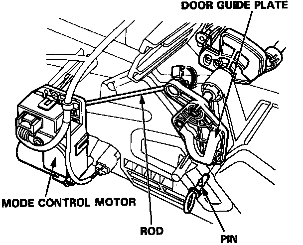
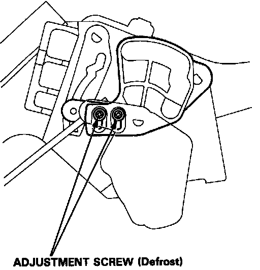
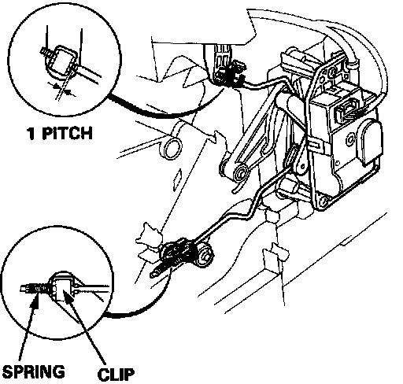

Evaporator Case: Adjustments
Heater-Evaporator Door AdjustmentsMode Door

1. To adjust the mode control motor rod, locate the door guide plate with pin, then secure the rod with a clip as shown.

2. After adjusting the rod, adjust the defroster door as shown.
Air Mix Door

- Adjust the air-mix control motor rod so the linkage looks like this in the cold position.